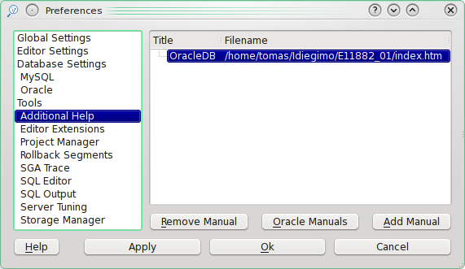

3.8.4 Additional Help Settings
This page is used to configure extra manuals for viewing in the TOra help viewer. Specifically the Oracle HTML based manuals which contents can be parsed and included in the left pane contents tree of the TOra help.

If you have compiled TOra with KDE support (Not Windows or Qt versions) you can point this to any HTTP location. You could even use the help browser to browse the Oracle manuals directly from Technet if you wanted to (Free membership required).
- Remove path
- This will remove the currently selected manual from the list.
- Oracle Manuals
- This is a quick way to add a collection of manuals. When you select this button a dialog will pop up and ask you for a filename. In Oracle 8 this should be the index page that contains the links to the manuals. Observe that this is not the page which links to the different book categories. In Oracle 9i you should point it to the docindex.htm file in the base directory of the documentation. If successful all the manuals available on the page is added to the list of manuals.
- Add path
- Add a manual to the list of manuals. This pop up a dialog asking for the name of the manual and the location of the manuals table of contents HTML file (toc.html).